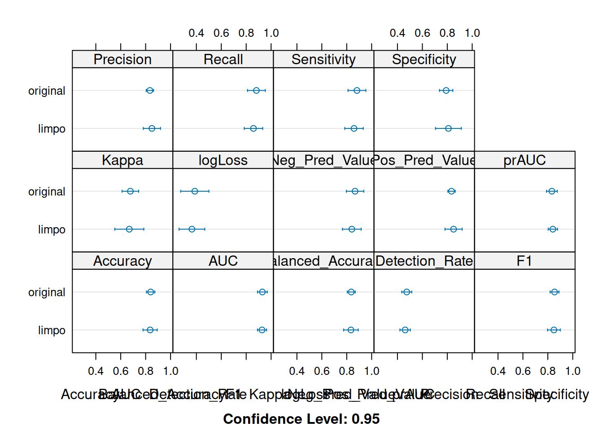
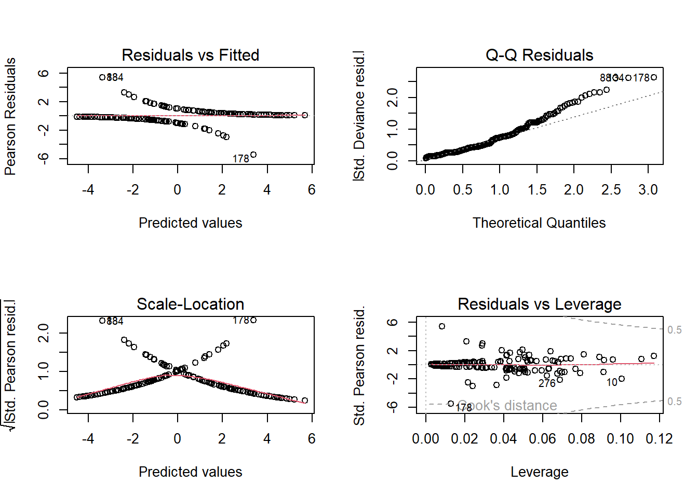

source(here::here("R", "modelPrep.R"))Análise Estatística de Fatores de Risco para Doença Coronária
Introdução
O dataset provém de um estudo que analisou 297 pacientes na Cleveland Clinic para avaliação da Doença Coronária;
O experimento envolveu 3 estágios:
- Teste de esforço (protocolo de Bruce)
- Cinefluoroscopia
- Angiografia coronária
- Cintilografia com Tálio-201
Variáveis analisadas
age
sex
cp : tipo de dor no peito
Angina Típica: Atende a três critérios (localização atrás do osso do peito, provocada por esforço/estresse e aliviada por repouso).
Angina Atípica: Atende a apenas dois desses critérios.
Dor Não Anginosa: Atende a apenas um ou nenhum dos critérios, sugerindo que a causa pode ser muscular ou gástrica (não cardíaca).
Assintomático: O paciente não sente dor, mas o médico ainda assim solicitou os exames devido a outros fatores de risco (como idade ou histórico familiar).
thalach : Frequência cardíaca máxima atingida antes da exaustão ou sintomas (no teste de esforço).
exang : Indica se o paciente sentiu angina (dor) durante o exercício.
oldpeak : diferença entre a posição do segmento ST (ECG) no repouso e no pico do esforço (thalac) (quanto maior essa diferença, maior é a área do coração que sofre por falta de sangue)
slope : Enquanto o oldpeak diz o quanto a linha afundou, o slope diz como ela se comporta logo após o afundamento. Existem três tipos principais de inclinação:
Value 0: Upsloping (Ascendente): A linha afunda, mas sobe rápido. É comum em exercícios intensos e nem sempre indica doença grave.
Value 1: Flat (Plano): A linha afunda e fica “reta”. É um sinal clássico e preocupante de isquemia.
Value 2: Downsloping (Descendente): A linha afunda e continua descendo. É o sinal mais grave de todos, indicando que o coração está em alto sofrimento isquêmico. (mesmo após a interrupção do esforço)
ca : Número de vasos principais com depósitos de cálcio ou interrupções no fluxo.
0: Nenhuma calcificação significativa (indício de artérias limpas)
1, 2 o u 3: Indica que a doença está presente em um, dois ou três vasos principais.
thal : Avalia se o sangue está chegando a todas as partes do coração durante o repouso e após o esforço.
0 = Normal: O contraste se distribui uniformemente por todo o coração.
1 = Fixed Defect (Defeito Fixo): Uma parte do coração não recebe o contraste nem no esforço, nem no repouso. Isso geralmente indica tecido morto (cicatriz de um infarto antigo).
2 = Reversable Defect (Defeito Reversível): O coração parece normal em repouso, mas “falta sangue” em alguma região durante o esforço. Isso é o sinal clássico de isquemia ativa: a artéria está entupida, mas o tecido ainda está vivo e sofrendo.
condition (target)
trestbps : É a pressão arterial medida no momento da internação.
fbs : Glicemia de Jejum é maior ou menor que 120mg/dl (binário)
chol : nível total de colesterol no sangue.
restecg :
Value 0 (Normal): O coração em repouso não apresenta irregularidades elétricas.
Value 1 (Anormalidade de Onda ST-T): O coração já mostra sinais de sofrimento mesmo sem fazer esforço. É um sinal de alerta precoce.
Value 2 (Hipertrofia Ventricular Esquerda): Indica que o músculo do coração está “inchado” (grosso), geralmente por ter que fazer muita força para bombear o sangue contra uma pressão alta crônica.
Modelagem com Regressão Logística
Modelo com todas as variáveis
formula1 <- condition ~ age + sex + cp + thalach + exang +
oldpeak + slope + ca + thal +
trestbps + chol + fbs + restecg
modelo1_ <- glm(formula1, data = treino, family = "binomial")summary(modelo1_)
Call:
glm(formula = formula1, family = "binomial", data = treino)
Coefficients:
Estimate Std. Error z value Pr(>|z|)
(Intercept) -6.194972 3.665480 -1.690 0.091012 .
age -0.026817 0.029325 -0.914 0.360473
sex1 1.751307 0.623152 2.810 0.004948 **
cp1 1.905287 0.923121 2.064 0.039021 *
cp2 0.321896 0.847290 0.380 0.704011
cp3 2.768984 0.864891 3.202 0.001367 **
thalach -0.011517 0.012639 -0.911 0.362196
exang1 0.337282 0.550815 0.612 0.540317
oldpeak 0.649698 0.283217 2.294 0.021791 *
slope1 1.341601 0.600799 2.233 0.025547 *
slope2 0.402313 1.023407 0.393 0.694237
ca1 2.575920 0.637209 4.043 5.29e-05 ***
ca2 3.119482 0.851992 3.661 0.000251 ***
ca3 2.982628 1.206518 2.472 0.013432 *
thal1 -0.336710 0.979476 -0.344 0.731023
thal2 1.486334 0.518928 2.864 0.004180 **
trestbps 0.014047 0.014133 0.994 0.320261
chol 0.005760 0.005651 1.019 0.308039
fbs1 -0.407723 0.701053 -0.582 0.560845
restecg1 1.120803 3.359086 0.334 0.738634
restecg2 0.261999 0.460966 0.568 0.569784
---
Signif. codes: 0 '***' 0.001 '**' 0.01 '*' 0.05 '.' 0.1 ' ' 1
(Dispersion parameter for binomial family taken to be 1)
Null deviance: 328.58 on 237 degrees of freedom
Residual deviance: 141.26 on 217 degrees of freedom
AIC: 183.26
Number of Fisher Scoring iterations: 6O teste de significância do modelo mostra que ele possui uma deviance muito menor, em relação ao modelo sem variáveis;
O AIC foi de 183.26.
Embora o modelo explique consiga explicar bem a variável alvo, é possível observar que a maioria das covariáveis não são estatísticametentes significativas, segundo o teste de Wald.
Para verificar isso, faremos um Teste de Razão de Verossimilhanças, verificando o impacto da retirada de cada variável.
pander(Anova(modelo1_, type = "III", test = "LR"))| LR Chisq | Df | Pr(>Chisq) | |
|---|---|---|---|
| age | 0.8384 | 1 | 0.3599 |
| sex | 8.776 | 1 | 0.003053 |
| cp | 20.58 | 3 | 0.0001287 |
| thalach | 0.8493 | 1 | 0.3568 |
| exang | 0.3705 | 1 | 0.5427 |
| oldpeak | 5.789 | 1 | 0.01612 |
| slope | 5.689 | 2 | 0.05818 |
| ca | 30.8 | 3 | 9.375e-07 |
| thal | 10.29 | 2 | 0.005832 |
| trestbps | 0.9972 | 1 | 0.318 |
| chol | 1.046 | 1 | 0.3065 |
| fbs | 0.3411 | 1 | 0.5592 |
| restecg | 0.4147 | 2 | 0.8127 |
Aqui é possível obervar que as variáveis que mais contribuem para o modelo são: sex, cp, oldpeak, slope, ca e thal
Para verificar se as outras variáveis não são importantes, faremos o Teste de Razão de Verossimilhanças entre o modelo com todas as variáveis e o modelo sem as variáveis (age, thalach, exang, trestbps, chol, fbs, restecg)
# Modelo reduzido ( com 6 variáveis )
modelo_reduzido_ <- glm(condition ~ sex + cp +
oldpeak + slope + ca + thal,
data = treino,
family = "binomial")
pander(anova(modelo1_, modelo_reduzido_, test = "Chisq"))| Resid. Df | Resid. Dev | Df | Deviance | Pr(>Chi) |
|---|---|---|---|---|
| 217 | 141.3 | NA | NA | NA |
| 225 | 146 | -8 | -4.728 | 0.7863 |
O P-valor foi de 0.7863, ou seja, não há evidências de que o modelo com todas as variáveis seja melhor que o modelo reduzido. Então optamos pelo uso do modelo reduzido.
pander(Anova(modelo_reduzido_, type = "III", test = "LR"))| LR Chisq | Df | Pr(>Chisq) | |
|---|---|---|---|
| sex | 7.552 | 1 | 0.005995 |
| cp | 33.87 | 3 | 2.114e-07 |
| oldpeak | 8.84 | 1 | 0.002947 |
| slope | 7.529 | 2 | 0.02318 |
| ca | 36.4 | 3 | 6.159e-08 |
| thal | 13.53 | 2 | 0.001152 |
Todas variáveis contribuem significativamente par ao modelo.
Analisando os coeficientes do modelo reduzido
summary(modelo_reduzido_)
Call:
glm(formula = condition ~ sex + cp + oldpeak + slope + ca + thal,
family = "binomial", data = treino)
Coefficients:
Estimate Std. Error z value Pr(>|z|)
(Intercept) -5.9413 1.0866 -5.468 4.55e-08 ***
sex1 1.5013 0.5701 2.633 0.008457 **
cp1 1.9084 0.8790 2.171 0.029920 *
cp2 0.1321 0.8094 0.163 0.870380
cp3 2.8874 0.7625 3.787 0.000153 ***
oldpeak 0.7464 0.2675 2.790 0.005265 **
slope1 1.4200 0.5586 2.542 0.011027 *
slope2 0.3778 0.9772 0.387 0.699022
ca1 2.4781 0.5834 4.248 2.16e-05 ***
ca2 2.7872 0.7884 3.535 0.000407 ***
ca3 3.0723 1.1399 2.695 0.007031 **
thal1 -0.4301 0.9152 -0.470 0.638360
thal2 1.6062 0.4905 3.275 0.001058 **
---
Signif. codes: 0 '***' 0.001 '**' 0.01 '*' 0.05 '.' 0.1 ' ' 1
(Dispersion parameter for binomial family taken to be 1)
Null deviance: 328.58 on 237 degrees of freedom
Residual deviance: 145.99 on 225 degrees of freedom
AIC: 171.99
Number of Fisher Scoring iterations: 6O AIC do modelo reduzido (171.99) foi menor, em relação ao modelo com todas as variáveis, e a Deviance Residual foi aproximadamente igual. Ou seja, o modelo com menos variáveis conseguiu explicar tão bem os dados quanto o completo.
# Calcula os Odds Ratios e os Intervalos de Confiança
intervalos <- exp(confint(modelo_reduzido_))Waiting for profiling to be done...ors <- exp(coef(modelo_reduzido_))
# Cria o data frame e calcula a Amplitude
tabela_coef <- data.frame(
OR = ors,
"2.5" = intervalos[,1],
"97.5" = intervalos[,2],
Amplitude = intervalos[,2] - intervalos[,1] # Diferença absoluta
)
pander(tabela_coef,
caption = "Odds Ratios, Intervalos de Confiança e Amplitude",
digits = 4)| OR | X2.5 | X97.5 | Amplitude | |
|---|---|---|---|---|
| (Intercept) | 0.002629 | 0.0002555 | 0.01868 | 0.01842 |
| sex1 | 4.487 | 1.524 | 14.54 | 13.02 |
| cp1 | 6.742 | 1.257 | 40.86 | 39.6 |
| cp2 | 1.141 | 0.2326 | 5.755 | 5.522 |
| cp3 | 17.95 | 4.36 | 89.08 | 84.72 |
| oldpeak | 2.109 | 1.278 | 3.68 | 2.401 |
| slope1 | 4.137 | 1.427 | 12.99 | 11.56 |
| slope2 | 1.459 | 0.2034 | 9.701 | 9.497 |
| ca1 | 11.92 | 3.986 | 39.93 | 35.94 |
| ca2 | 16.24 | 3.77 | 83.96 | 80.19 |
| ca3 | 21.59 | 2.872 | 261.3 | 258.5 |
| thal1 | 0.6504 | 0.1084 | 4.116 | 4.008 |
| thal2 | 4.984 | 1.94 | 13.45 | 11.51 |
É possível observar que alguns coeficientes estimados são muito incertos (o modelo não conseguiu definir se a associação entre a respectiva variável e o target era positiva ou negativa);
Essas variáveis foram : cp2, slope2 e thal1
Outros coeficientes tinham IC com amplitude grande demais, como foi o caso de cp3, ca3, ca2
Ou seja, o modelo não conseguiu estimar precisamente os coeficientes
Uma possível motivação para isso é que essas variáveis categóricas possuem algumas classes subrepresentadas no dataset, dificultando a estimação dos parâmetros.
Treinando modelo com agrupamento de classes subrepresentadas
- cp :
- cat0 : {0, 1, 2}
- cat1 : 3
- slope :
- cat0 : 0
- cat1 : {1, 2}
- ca :
- cat0 : 0
- cat1 : {1, 2, 3}
- thal :
- cat0 : 0
- cat1 : {1, 2}
modelo_limpo <- glm(condition ~ sex+ cp +
oldpeak + slope + ca + thal,
data = treino_limpo,
family = "binomial")summary(modelo_limpo)
Call:
glm(formula = condition ~ sex + cp + oldpeak + slope + ca + thal,
family = "binomial", data = treino_limpo)
Coefficients:
Estimate Std. Error z value Pr(>|z|)
(Intercept) -2.1741 0.5627 -3.864 0.000112 ***
sex1 1.1387 0.4984 2.285 0.022342 *
cp_sem dor 2.1247 0.4299 4.943 7.70e-07 ***
oldpeak 0.5708 0.2290 2.493 0.012669 *
slope_not_asc 0.9416 0.4819 1.954 0.050691 .
ca_zero -2.3326 0.4465 -5.224 1.75e-07 ***
thal_not_normal 1.2461 0.4543 2.743 0.006092 **
---
Signif. codes: 0 '***' 0.001 '**' 0.01 '*' 0.05 '.' 0.1 ' ' 1
(Dispersion parameter for binomial family taken to be 1)
Null deviance: 328.58 on 237 degrees of freedom
Residual deviance: 157.70 on 231 degrees of freedom
AIC: 171.7
Number of Fisher Scoring iterations: 6pander(Anova(modelo_limpo, type = "III", test = "LR"))| LR Chisq | Df | Pr(>Chisq) | |
|---|---|---|---|
| sex | 5.427 | 1 | 0.01983 |
| cp | 27.94 | 1 | 1.251e-07 |
| oldpeak | 6.894 | 1 | 0.008648 |
| slope | 3.875 | 1 | 0.04902 |
| ca | 32.82 | 1 | 1.011e-08 |
| thal | 7.67 | 1 | 0.005615 |
# Calcula os Odds Ratios e os Intervalos de Confiança
intervalos <- exp(confint(modelo_limpo))Waiting for profiling to be done...ors <- exp(coef(modelo_limpo))
# Cria o data frame e calcula a Amplitude
tabela_coef <- data.frame(
OR = ors,
"2.5" = intervalos[,1],
"97.5" = intervalos[,2],
Amplitude = intervalos[,2] - intervalos[,1] # Diferença absoluta
)
pander(tabela_coef,
caption = "Odds Ratios, Intervalos de Confiança e Amplitude",
digits = 4)| OR | X2.5 | X97.5 | Amplitude | |
|---|---|---|---|---|
| (Intercept) | 0.1137 | 0.0346 | 0.3199 | 0.2853 |
| sex1 | 3.123 | 1.196 | 8.564 | 7.368 |
| cp_sem dor | 8.37 | 3.71 | 20.25 | 16.54 |
| oldpeak | 1.77 | 1.15 | 2.836 | 1.686 |
| slope_not_asc | 2.564 | 1.004 | 6.721 | 5.717 |
| ca_zero | 0.09704 | 0.03845 | 0.2243 | 0.1859 |
| thal_not_normal | 3.477 | 1.439 | 8.636 | 7.198 |
Aqui, é possível observar que os parâmetros estão mais estáveis e os odds ratios estão mais de acordo com os resultados obtidos da EDA;
Verificando o desempenho dos modelos no conjunto de teste
set.seed(28)
modelo1 <- train( condition ~ sex+ cp +
oldpeak + slope + ca + thal,
data = treino,
method = "glm",
family = "binomial",
trControl = ctrl)
modelo2 <- train( condition ~ sex+ cp +
oldpeak + slope + ca + thal,
data = treino_limpo,
method = "glm",
family = "binomial",
trControl = ctrl)
resultados <- resamples(list(original = modelo1, limpo = modelo2))dotplot(resultados)
# Matriz para o modelo original
p1 <- predict(modelo1, treino)
m_original <- confusionMatrix(p1, treino$condition)
# Matriz para o modelo limpo
p2 <- predict(modelo2, treino_limpo)
m_limpo <- confusionMatrix(p2, treino_limpo$condition)
# Exibindo lado a lado com pander
pander(m_original$table, caption = "Matriz de Confusão: Modelo Original")| Saudavel | Doente | |
|---|---|---|
| Saudavel | 116 | 15 |
| Doente | 12 | 95 |
pander(m_limpo$table, caption = "Matriz de Confusão: Modelo Limpo")| Saudavel | Doente | |
|---|---|---|
| Saudavel | 112 | 18 |
| Doente | 16 | 92 |
# 1. Treinando a Árvore de Decisão com Dados Originais
arvore_original <- rpart(condition ~ sex + cp + oldpeak + slope + ca + thal,
data = treino,
method = "class")
# 2. Treinando a Árvore de Decisão com Dados Limpos
arvore_limpa <- rpart(condition ~ sex + cp + oldpeak + slope + ca + thal,
data = treino_limpo,
method = "class")
# 3. Plotando as árvores lado a lado para comparação
par(mfrow = c(1, 2)) # Divide a tela em 2 colunas
rpart.plot(arvore_original, main = "Árvore: Dados Originais",
type = 4, extra = 104, under = TRUE, faclen = 0)
rpart.plot(arvore_limpa, main = "Árvore: Dados Limpos",
type = 4, extra = 104, under = TRUE, faclen = 0)
# --- 1. PREDIÇÕES (REGRESSÃO LOGÍSTICA) ---
# Modelo 1 (Original) no Teste Original
pred_log_orig <- predict(modelo1, teste)
cm_log_orig <- confusionMatrix(pred_log_orig, teste$condition)
# Modelo 2 (Limpo) no Teste Limpo
pred_log_limpo <- predict(modelo2, teste_limpo)
cm_log_limpo <- confusionMatrix(pred_log_limpo, teste_limpo$condition)
# --- 2. PREDIÇÕES (ÁRVORE DE DECISÃO) ---
# Árvore Original no Teste Original
pred_tree_orig <- predict(arvore_original, teste, type = "class")
cm_tree_orig <- confusionMatrix(pred_tree_orig, teste$condition)
# Árvore Limpa no Teste Limpo
pred_tree_limpa <- predict(arvore_limpa, teste_limpo, type = "class")
cm_tree_limpa <- confusionMatrix(pred_tree_limpa, teste_limpo$condition)
# --- 3. TABELA COMPARATIVA DE ACURÁCIA ---
comparativo_teste <- data.frame(
Modelo = c("Logística Original", "Logística Limpa", "Árvore Original", "Árvore Limpa"),
Acuracia = c(cm_log_orig$overall['Accuracy'], cm_log_limpo$overall['Accuracy'],
cm_tree_orig$overall['Accuracy'], cm_tree_limpa$overall['Accuracy']),
Sensibilidade = c(cm_log_orig$byClass['Sensitivity'], cm_log_limpo$byClass['Sensitivity'],
cm_tree_orig$byClass['Sensitivity'], cm_tree_limpa$byClass['Sensitivity']),
Especificidade = c(cm_log_orig$byClass['Specificity'], cm_log_limpo$byClass['Specificity'],
cm_tree_orig$byClass['Specificity'], cm_tree_limpa$byClass['Specificity'])
)
pander(comparativo_teste, caption = "Performance no Conjunto de Teste")| Modelo | Acuracia | Sensibilidade | Especificidade |
|---|---|---|---|
| Logística Original | 0.8136 | 0.8438 | 0.7778 |
| Logística Limpa | 0.7966 | 0.8125 | 0.7778 |
| Árvore Original | 0.8305 | 0.875 | 0.7778 |
| Árvore Limpa | 0.8305 | 0.875 | 0.7778 |
# --- 1. PREDIÇÕES DE PROBABILIDADE (Necessárias para AUC) ---
prob_log_orig <- predict(modelo1, teste, type = "prob")[,2]
prob_log_limpo <- predict(modelo2, teste_limpo, type = "prob")[,2]
prob_tree_orig <- predict(arvore_original, teste, type = "prob")[,2]
prob_tree_limpa <- predict(arvore_limpa, teste_limpo, type = "prob")[,2]
# --- 2. FUNÇÃO AUXILIAR PARA MÉTRICAS ---
get_metrics <- function(pred_class, true_class, probs) {
cm <- confusionMatrix(pred_class, true_class)
roc_obj <- roc(true_class, probs, quiet = TRUE)
return(c(
Acc = cm$overall['Accuracy'],
Sens = cm$byClass['Sensitivity'],
Spec = cm$byClass['Specificity'],
AUC = auc(roc_obj),
PR_AUC = PRAUC(probs, ifelse(true_class == levels(true_class)[2], 1, 0))
))
}
# --- 3. CÁLCULO DAS MÉTRICAS ---
m1 <- get_metrics(pred_log_orig, teste$condition, prob_log_orig)
m2 <- get_metrics(pred_log_limpo, teste_limpo$condition, prob_log_limpo)
m3 <- get_metrics(pred_tree_orig, teste$condition, prob_tree_orig)
m4 <- get_metrics(pred_tree_limpa, teste_limpo$condition, prob_tree_limpa)
# --- 4. TABELA FINAL ---
comparativo_completo <- data.frame(
Modelo = c("Logística Original", "Logística Limpa", "Árvore Original", "Árvore Limpa"),
rbind(m1, m2, m3, m4)
)
pander(comparativo_completo, caption = "Comparativo de Performance no Teste (AUC e PR-AUC)")| Modelo | Acc.Accuracy | Sens.Sensitivity | |
|---|---|---|---|
| m1 | Logística Original | 0.8136 | 0.8438 |
| m2 | Logística Limpa | 0.7966 | 0.8125 |
| m3 | Árvore Original | 0.8305 | 0.875 |
| m4 | Árvore Limpa | 0.8305 | 0.875 |
| Spec.Specificity | AUC | PR_AUC | |
|---|---|---|---|
| m1 | 0.7778 | 0.8704 | 0.8558 |
| m2 | 0.7778 | 0.8819 | 0.8641 |
| m3 | 0.7778 | 0.8281 | 0.352 |
| m4 | 0.7778 | 0.8281 | 0.352 |
# --- 5. PRINT DAS MATRIZES DE CONFUSÃO ---
cat("\n### MATRIZES DE CONFUSÃO ###\n")
### MATRIZES DE CONFUSÃO ###pander(cm_log_orig$table, caption = "Logística Original")| Saudavel | Doente | |
|---|---|---|
| Saudavel | 27 | 6 |
| Doente | 5 | 21 |
pander(cm_log_limpo$table, caption = "Logística Limpa")| Saudavel | Doente | |
|---|---|---|
| Saudavel | 26 | 6 |
| Doente | 6 | 21 |
pander(cm_tree_orig$table, caption = "Árvore Original")| Saudavel | Doente | |
|---|---|---|
| Saudavel | 28 | 6 |
| Doente | 4 | 21 |
pander(cm_tree_limpa$table, caption = "Árvore Limpa")| Saudavel | Doente | |
|---|---|---|
| Saudavel | 28 | 6 |
| Doente | 4 | 21 |